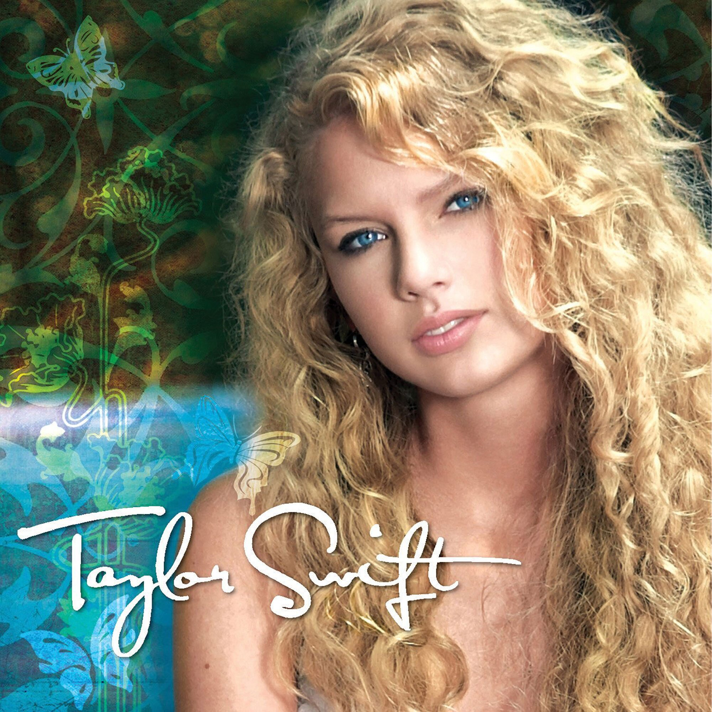
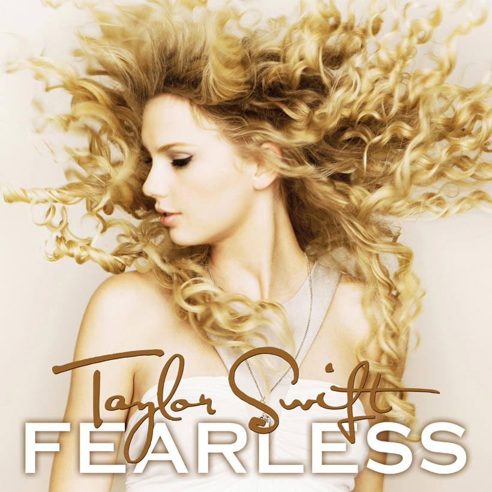
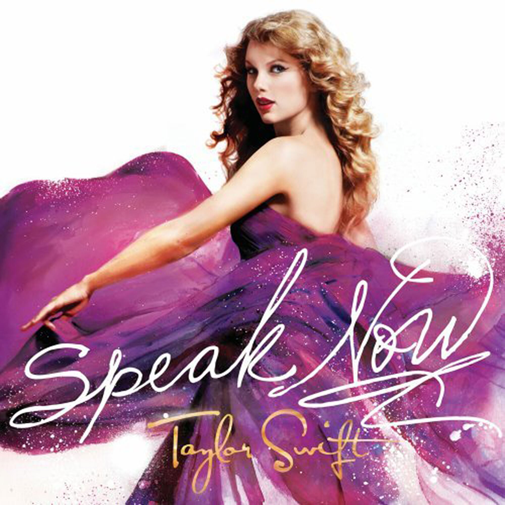
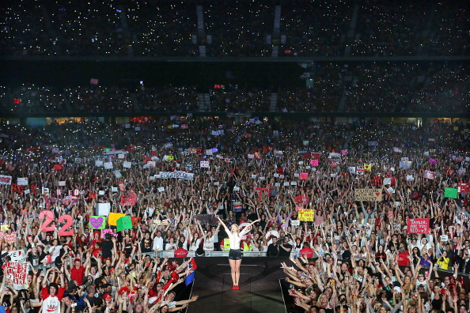

Country to Pop: A Closer Look at Taylor Swift's Transformation
Taylor Swift's Discography Timeline
-

Taylor Swift
2006
-

Fearless
2008
-

Speak Now
2010
-

Red
2012
-

1989
2014
-

Reputation
2017
-

Lover
2019
Introduction
Taylor Swift has become one of the most well-known, successful artists of our generation. But when she first started out, she was just a seventeen-year-old country artist from Reading, PA. In the fourteen years since her first single in 2006, "Tim McGraw," her music has changed from country, to country pop, and now has fullly transitioned to pop. As she's gotten more well-known, her concert ticket sales have also increased. I will be looking at how Taylor Swift's music has changed, why she might have changed it, and how this has affected her record/concert sales. Lastly I will look at how Swift has become more political in recent years, since it is a presidential election year. I want to see just how much influence Swift has on voters based on data from the 2018 midterm election, when she first started becoming political.
Taylor Swift/Fearless
Taylor Swift was Swift's self-titled debut album, released on Oct. 24, 2006. Swift was only 17 at the time and had written the songs during her freshman year of high school. Even though it was her first album, Swift still sold almost 7 million albums worldwide. This was the only album Swift did not have a tour for.
Fearless, Swift's sophomore album, came two years later, on Nov. 11, 2008. Singles from the album such as "You Belong With Me" and "Love Story" gained Swift worldwide success and a number-one spot on the Billboard Hot Country Songs chart. The album became the longest chart-topper by a female country artist ever. Swift also won Album of the Year at the Grammys for this album, a huge accomplishment for it only being her second album. Worldwide Swift sold a little less than 10 million copies. This was also the first album Swift toured for. The Fearless tour had 99 shows from Apr. 2009 to June 2010, grossing $66.5 million.
Taylor Swift's first single, "Tim McGraw," can be listened to below:
Speak Now/Red
Red is Swift's fourth studio album, released Oct. 22, 2012. Many critics described this album as a fusion of country and pop, with Swift beginning to transition from her country roots to fully pop. Red sold slightly less albums in the U.S. than its predecessor Speak Now, at 4.5 million, but ultimately sold more than Speak Now worldwide (7.1 million copies). The Red Tour started Mar. 2013 and ended June 2014, with Swift playing a total of 86 shows. The tour made over $150 million.
After Swift won album of the year for Fearless, she said some critics cited her success to the male co-writers of her songs. This inspired her to be the sole writer for her third album, Speak Now. Speak Now was released on Oct. 25, 2010 and sold 4.7 million copies in the U.S. 6.2 million copies were sold worldwide. The Speak Now World Tour had 110 shows from Feb. 2011 to Mar. 2012, which grossed Swift $96 million.
"Mine," featured left, was the first single from the album and a clear mixing of the country and pop genres.

1989
Oh, [the critics] are saying my music is changing too much for me to stay in country music? Alright, OK, here’s an entire genre shift, and an entire pop album called 1989.
Taylor Swift wins Album of the Year at the 58th annual Grammy Awards. This was her second time winning the award.
1989's second single, "Blank Space." "Blank Space" is very noticeably pop, without any of Swift's previous country roots.
Swift's fifth studio album, 1989 was released Oct. 27, 2014 and marked Swift's full transition into a pop artist. She sold 6.2 million albums in the U.S. and her largest worldwide amount of 10.3 million. The 1989 World Tour started in May 2015 and went until Dec. 2015, with 85 shows. By grossing over $250 million, it became both her most successful tour of the time and the most successful tour of the entire year of 2015. 1989 also won Album of the Year at the Grammy Awards; Swift's second time winning the award.
A fan of Swift's said one reason why the singer might've finalized the switch to pop is because Red did not win a single Grammy, despite being nominated for both Album of the Year and Best Country Album. Swift also stated in her documentary Miss Americana that female artists often feel the need to switch up their style every two years to remain relevant and interesting, while male artists don't have this same problem. Lastly, Swift's fan said that Swift also probably wanted to change genres since she herself had changed and grown older since the start of her career in 2006.
Reputation/Lover
Reputation, Swift's sixth studio album, was released Nov. 10, 2017, after a three year break from her last album, 1989. She sold 3.6 million copies worldwide which was a considerable drop from 1989, though she made the most she ever had from a tour with the Reputation Stadium Tour, at $266 million. The Reputation Stadium Tour started May 2018 and continued until Nov. 2018, with 53 shows. Swift also made a concert film for Netflix titled Taylor Swift: Reputation Stadium Tour.
Swift's most recent album is Lover, released Aug. 23, 2019. Swift has sold 2.2 million albums in the U.S. and 3.3 million worldwide. Though she planned to have the Lover Fest, a smaller, more intimate tour than the stadium tours she'd been having, the tour was postponed due to the coronavirus pandemic.
Swift’s most recent single, “The Man.” Swift also directed the music video for the song in her directorial debut.
Album/Ticket Sales Data
Politics
On Sunday Oct. 7, 2018, Taylor Swift broke her longtime apolitical stance in order to endorse two Democratic candidates in the Tennessee midterm elections. In her documentary Miss Americana she stated that she wanted to be on the right side of history and convinced her dad that she should make a post about her political views. 48 hours after her post, more than 169,000 new people registered to vote on Vote.org (the website Swift had specifically mentioned in her post). More than half of these voters were ages 18-29, which is Swift's main demographic. The site usually has 14,078 average daily visitors, and 24 hours after Swift’s post, it had 155,940 visitors (The Washington Post). 36 hours after Swift’s post, Vote.org tracked 2,144 new voter registrations in the state of Tennessee, where Swift is registered to vote.
Conclusion
Although Taylor Swift’s record sales have gone down, she made more on the Reputation Tour than she ever has before. It is highly likely her record sales have gone down due to streaming sites such as Spotify and Apple Music. Swift saw her biggest increase in worldwide sales from 1989 after making her full transition to pop, but Fearless remains her most-sold album in the United States. Swift also saw the most ticket sales with her 1989 World Tour, though the Reputation Stadium Tour ended up grossing slightly more. Looking at the new voter registration chart from the 2018 midterm election, it is clear that Swift is also a hugely influential figure. Of course all of the new voter registrations in October can’t be accredited to her, but it’s not a coincidence that her state of Tennessee saw such a huge increase and that more than half of the new voters were in the 18-29 age demographic, which is the majority of Swift’s fanbase.